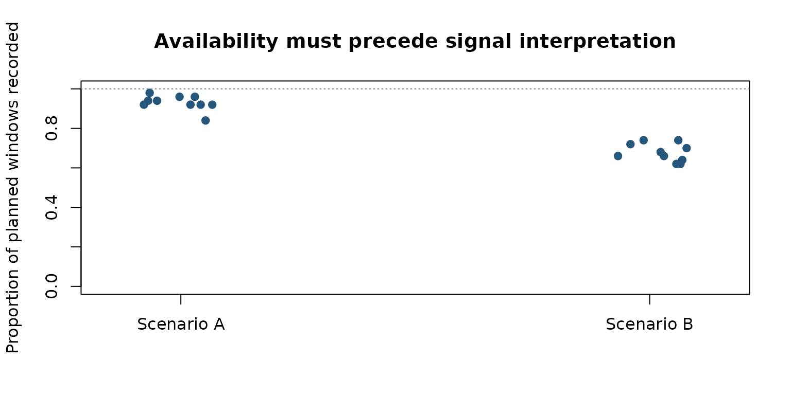
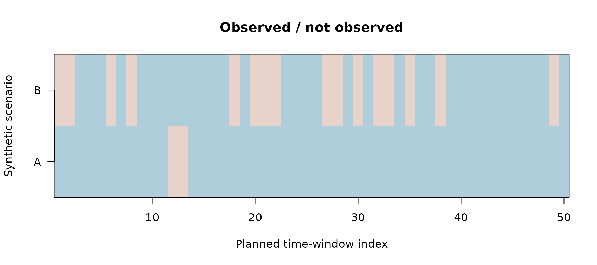

Acquisition availability before physiological inference
Source:vignettes/october-2026-acquisition-availability.Rmd
october-2026-acquisition-availability.RmdThe observation process is an estimand decision
A clean-looking physiological signal does not establish that a sensor was available throughout the intended observation window. For repeated observations, the independent unit of measurement may be a participant, whereas availability can be summarized per sample or per recording interval. These quantities describe retention and completeness; they do not measure EDA, PPG, heart-rate accuracy or physiological validity.
This documentation-only example generates an intentionally synthetic
availability dataset with 20 participants and 50 planned windows per
participant. The assigned scenario represents two
artificial loss mechanisms, not measured demographic or device
groups.
set.seed(20261022)
participant <- rep(seq_len(20L), each = 50L)
scenario <- rep(c("Scenario A", "Scenario B"), each = 500L)
loss_probability <- rep(c(rep(0.08, 10L), rep(0.32, 10L)), each = 50L)
recorded <- stats::rbinom(length(participant), 1L, 1 - loss_probability)
dat <- data.frame(participant = participant, scenario = scenario,
recorded = recorded)
per_person <- stats::aggregate(recorded ~ participant + scenario, data = dat,
FUN = mean)
names(per_person)[3L] <- "recorded_fraction"
stopifnot(nrow(per_person) == 20L, nrow(dat) == 1000L,
all(per_person$recorded_fraction >= 0),
all(per_person$recorded_fraction <= 1))
stats::aggregate(recorded_fraction ~ scenario, per_person, mean)## scenario recorded_fraction
## 1 Scenario A 0.930
## 2 Scenario B 0.678Figure 1. Participant-level retention
graphics::stripchart(recorded_fraction ~ scenario, data = per_person,
method = "jitter", jitter = 0.08, vertical = TRUE,
pch = 19, col = "#24577B",
ylab = "Proportion of planned windows recorded",
main = "Availability must precede signal interpretation",
ylim = c(0, 1))
graphics::abline(h = 1, lty = 3, col = "#888888")
Original R plot of synthetic recording-window availability. All points are synthetic participants; labels are deliberately non-demographic.
Figure 2. Completeness across observation windows
example_ids <- c(1L, 11L)
rows <- lapply(example_ids, function(i) dat$recorded[dat$participant == i])
matrix_availability <- do.call(rbind, rows)
graphics::image(x = seq_len(ncol(matrix_availability)),
y = seq_len(nrow(matrix_availability)),
z = t(matrix_availability),
col = c("#E8D3CA", "#AECEDC"),
xlab = "Planned time-window index", ylab = "Synthetic scenario",
yaxt = "n", main = "Observed / not observed")
graphics::axis(2, at = seq_along(example_ids),
labels = c("A", "B"), las = 1)
One synthetic recording availability timeline for each scenario; filled cells indicate the presence of a recorded window, not sensor validity.
What is and is not supported
This illustration can support a reporting rule: disclose planned and observed records, independent participant counts, interval-level missingness and any preprocessing interpolation before extracting features. It does not justify assuming missing completely at random, replacing absent windows with physiological values, inferring bias or fairness, or generalizing to real Gazepoint hardware. Physiological agreement requires external reference instruments and an independent validation design.
Research-grade acquisition-equivalence and estimation-graphic interfaces remain in the separate draft implementation PR #69; this vignette neither merges them nor promotes an unqualified method to CRAN. Published GitHub 2.1.0 and CRAN 0.1.0 are separate, immutable release records.